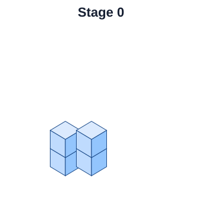
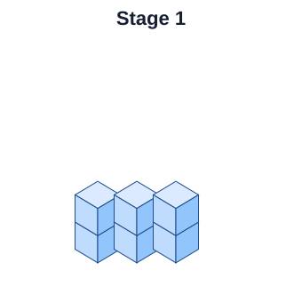
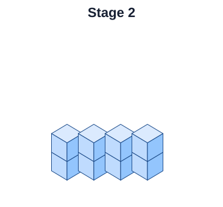

Algebra 1 · 0.1 Get Acquainted · Partner Investigation
Build It, Record It, Predict It
Use centimeter cubes to connect a physical pattern to a table, graph, and rule.
Names:
Teacher & Student Moves Teacher: Ask “What changes? What stays the same?” before asking for a rule. Monitor how pairs count and whether they treat Stage 0 as a real stage. Students: Build, count, compare, explain, represent, test, and revise.
Part A — Build from the Pictures
With your partner, build each stage exactly as shown. Count the total number of cubes in each model.



Stage
0
1
2
3
4
10
23
Cubes
Describe in words how the model changes from one stage to the next.
Write an informal rule that tells how many cubes are in any stage.
How many cubes do you predict at Stage 23? Explain how you know.
Graph at least five stage/cube pairs. You may extend the scale if needed.
Part A key: 4, 6, 8, 10, 12, 24, 50. A natural rule is “start with 4 and add 2 for each stage,” or cubes = $4+2( ext{{stage}})$.
Part B — Build a Model from a Rule
Rule: Stage 0 starts with 6 cubes. Each new stage adds 3 cubes.
Use cm cubes to invent a model that follows this rule.
Build Stages 0, 1, and 2. Sketch or describe what you built.
Make a table for Stages 0 through 5.
Graph the stage number and total number of cubes.
Predict the number of cubes at Stage 23. Explain your method.
Stage
0
1
2
3
4
5
23
Cubes
Part B key: values 6, 9, 12, 15, 18, 21; Stage 23 = 75. Accept any physical model that actually starts with 6 and adds exactly 3 cubes per stage.
Part C — Create Your Own
Invent a growing cube pattern that starts at Stage 0 and adds the same number of cubes each stage.
Build Stages 0, 1, and 2.
State your starting number and how many cubes are added each stage.
Make a table and graph.
Write your rule in words.
Predict Stage 10 and Stage 23.
Trade with another pair. Can they use your rule to predict a stage you did not build?
Part C: Check that the built stages, table, graph, verbal rule, and predictions all describe the same pattern. The representation connection matters more than formal function notation.